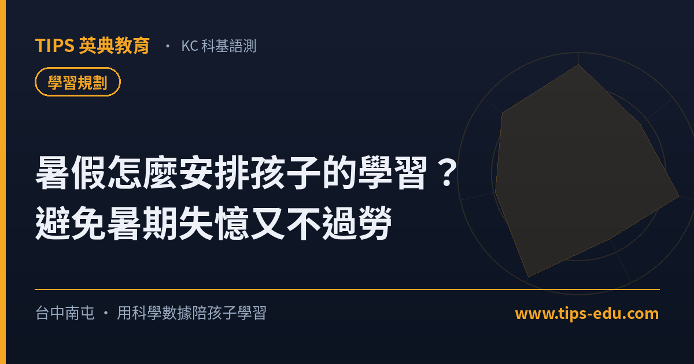

學習規劃暑假怎麼安排孩子的學習？避免「暑期失憶」又不過勞的方法
研究指出，漫長暑假常讓孩子流失約 2～3 個月的數學、1～2 個月的閱讀能力，這就是「暑期失憶（summer slide）」。但把暑假塞滿課也不對。最理想的安排是：維持規律作息、每天固定閱讀、適度補弱點，再加上 1～2 個「學習錨點」——讓暑假有結構，又留得住玩與探索的空間。
「暑假兩個月，到底要讓孩子好好放鬆，還是排滿課程？」這是每年六、七月台中南屯家長最常糾結的問題。放太鬆怕開學跟不上，排太滿又怕孩子累壞、反而討厭學習。這篇我們用國內外研究與學習科學，幫你找出「不退步、也不過勞」的暑假平衡點。
暑假不學習，會發生什麼事？認識「暑期失憶」
教育研究有個明確的現象叫「暑期失憶（summer slide）」：長假期間若完全停止學習，孩子的學科能力會明顯倒退。多項研究估計，平均一個暑假會流失約 2～3 個月的數學能力、1～2 個月的閱讀能力；而且越是缺乏結構化學習資源的孩子，退步幅度越大。換句話說，暑假不是「學習暫停鍵」，沒有節奏地放兩個月，開學往往要花更久才追得回來。
但「填好填滿」也不對：暑假真正的價值
知道會退步，不代表要把暑假排成另一個學期。暑假真正珍貴的地方，是孩子終於有「整塊的時間」可以深入閱讀、發展興趣、補上平時來不及顧的弱點，甚至為下學期超前打底。研究也指出，有效的不是「上很多課」，而是「有沒有持續、結構化的學習」。所以重點從來不是報幾個營隊，而是有沒有穩定的節奏。
用「3 個錨點」幫暑假抓出結構
與其每天臨時決定要做什麼，不如先放下幾個固定「錨點」，暑假自然就有骨架：第一，規律作息——起床時間最多比上學晚半小時到一小時，開學才不會難調回來；第二，每天一段固定學習與閱讀——例如每天 60～90 分鐘，搭配從圖書館借書養成閱讀習慣；第三，1～2 個學習錨點——像一個有明確學習目標的營隊週、或一段針對弱科的補強。再加上運動與家庭活動，暑假就能張弛有度。
暑假最適合做的一件事：把弱點補起來、為下學期打底
平時進度趕，弱點常常被帶過；暑假剛好是「停下來把洞補好」的最佳時機。從學習科學的角度，最有效的方式是個人化＋精熟：先看清楚孩子目前卡在哪，再針對那些點循序練到熟，而不是全班齊頭式重上一遍。這也是「把時間用在刀口上」的關鍵——少而精，遠勝多而雜。
各年級暑假怎麼安排？升學銜接的重點與提醒
不同年段，暑假該顧的重點差很多。以下依各個「升級銜接」整理建議與要注意的地方，也對應到 TIPS 的暑期銜接／衝刺課程（國中、高中各年級皆有班）：
- 1國小升國中 從「被動寫作業」轉成「主動規劃」。重點：英文單字與文法打底、數學從具體邁向抽象、養成自律與時間管理。⚠️ 別讓孩子開學才直接面對落差。
- 2國一升國二 科目變多（理化登場）、課業加深。重點：英數不中斷、補一年級弱點、建立讀書方法。⚠️ 國二是分水嶺，落後容易越拉越大。
- 3國二升國三 會考衝刺正式起跑。重點：全科總複習起步、鎖定弱科、熟悉題型與時間分配。⚠️ 暑假沒動起來，九年級會很趕。 會考國文作文（國寫）別輕忽——TIPS 語研國語文以 AI 老師結合三元知識蒸餾與個人語言模型（PLM），從學生視角拆解起承轉合、精準揪出語病，輕鬆把國寫拉高級分。
- 4國三升高一 國中到高中跨度最大。重點：高中先修（數學、英文、物理化學）、調整讀書策略。⚠️ 會考後最容易鬆懈，銜接沒做好高一就吃力。
- 5高一升高二 選類組、學測範圍加重。重點：依類組補強、英數持續、培養自主學習。⚠️ 高二進度快，基礎不穩會雪上加霜。
- 6高二升高三 學測與分科衝刺的黃金暑假。重點：系統化總複習、考古題、落點規劃。⚠️ 這個暑假幾乎牽動學測成績，別白白浪費。 學測英文作文同樣關鍵——TIPS Lingocraft以 AI 老師結合「觀察—分析—預測」與十大連環架構，為每個孩子建立個人語言模型（PLM），把英文作文寫得有邏輯、拉高級分。
這 4 點，TIPS 怎麼做到
這份清單，我們也拿來檢視自己。以下是 TIPS 英典教育在暑假對照本篇重點的實際做法——不是「什麼都能包」，而是「用這些標準要求自己」：
- 1先診斷再補 暑假前安排免費落點診斷，找出孩子真正的弱點，把暑假時間用在最該補的地方。
- 2分級閱讀不間斷 Lumos 英文閱讀採藍思分級，暑假也維持每天適齡閱讀，直接對抗「暑期失憶」。
- 3AI 個人化、精熟補強 KC 科基語測以 AI 雙語與個人語言模型（PLM）針對弱點循序練到熟，對應 CEFR A1～B1，效率高、進度看得見。
- 4把省下的時間還給孩子 學科用對方法、少而精地完成，剩下的暑假留給閱讀、運動與探索——這正是我們以「台灣的 Alpha School」為目標的學習理念。
常見問題
Q1：暑假到底要不要讓孩子上課？
不必把暑假填滿，但建議保留「每天一小段固定學習」並設 1～2 個學習錨點，維持節奏與規律作息。這樣既能避免暑期失憶，也不會讓孩子過勞、開學前才手忙腳亂。
Q2：暑假怎麼避免孩子學習退步？
研究指出，暑假常讓學生流失約 2～3 個月的數學、1～2 個月的閱讀能力，稱為「暑期失憶」。維持規律作息、每天閱讀、適度複習弱點科目，並參與有明確學習目標的課程，就能有效減緩。
Q3：暑假最適合補哪一科？
建議先做一次落點診斷找出弱點。一般而言英文與數學最容易因停學而退步，也最適合在暑假用個人化、精熟的方式打底；TIPS 提供免費落點診斷，可預約後安排。